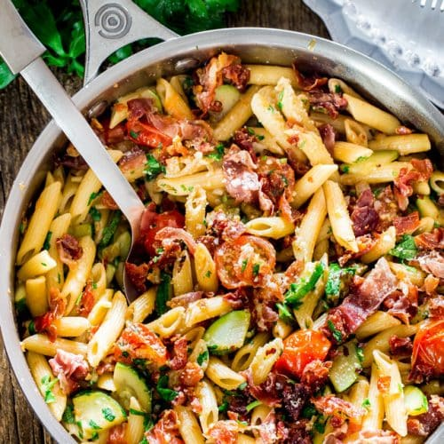

Penne di Bari

Description
This is a family recipe, closely held in high regard, passed from one generation to the next. And now it is being shared wih you, assuming someone is actually reading this brutal website. Regardless, the dish itself is perfect combination of prociutto, tomatoes, and zucchini, tossed in a creamy sauce, and paired with perfect saltiness that prociutto brings. Let's get to it!
Ingredients
- 1 medium pot
- 1 large skillet
- 1 lb penne pasta
- 1/4 lb prociutto, sliced
- extra virgin olive oil
- 1 medium zucchini, quartered and sliced
- 16 oz of cherry tomatoes, sliced in half (if you don't know what 16 ounces looks like, just grab a couple handfuls)
- 1 small yellow onion, chopped
- 6 cloves of garlic, minced
- 1/2 cup heavy whipping cream
- 1 tsp crush red pepper flakes
- kosher salt and pepper to taste
- 2 tsp balsamic vinger
- 1-2 sprigs of fresh parsley, chopped
- 2 oz parmesan cheese, freshly grated
Cooking Steps
- Do all your prep work ahead of time: gather all your ingredients; slice the things that need slicing, chop what needs chopping. You're adult, you can figure it out.
- Begin boiling a medium pot of water, setting aside the penne. Once pot of water is boiling, reduce heat to medium to prevent overboiling. Cook penne until "al dente" (by the tooth), which should take about 10 minutes. Strain, lightly pour olive oil (NOT water) over the penne and occasionally, gently toss to prevent the penne from sticking to each other.
- Meanwhile, set the temp of the skillet to medium-high. Once heated, lay out the sliced prociutto evenly across the skillet. Cook 1-2 minutes or until crisp. Remove once crisp.
- Once the prociutto is done, add olive oil to the skillet, allow to warm, then sauté the zucchini, onion, garlic, and red pepper flakes for 2 minutes. Lightly season with salt and pepper. Stir.
- Add the tomatoes and continue sauté for another 2-3 minutes. Lightly season with salt and pepper. Stir.
- Once cooked, add the heavy whipping cream, balsamic, prociutto, salt, and pepper and mix together well.
- Add the penne to the dish, mixing together well.
- Garnish with the parsley and parmesan.
- Buon appetito!